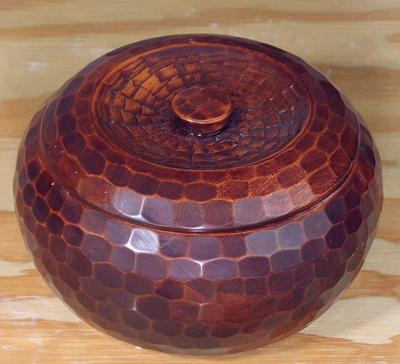

Rice Serving Bowl

This is the traditional style of rice serving bowl, carved from wood. I
purchased it probably in the late 1970s. These are made in a range of sizes,
the photo example being 7-1/8 inches (18 cm). About 15 years later I saw
some for sale and was shocked by the price being asked by then. Today,
plastic imitations are sold.
More on Japanese Serving Pieces
sv_ricebwl 220130 ©Andrew Grygus - agryg@aaxnet.com
- Linking to and non-commercial use permitted
All images not otherwise attributed are ©
cg1.